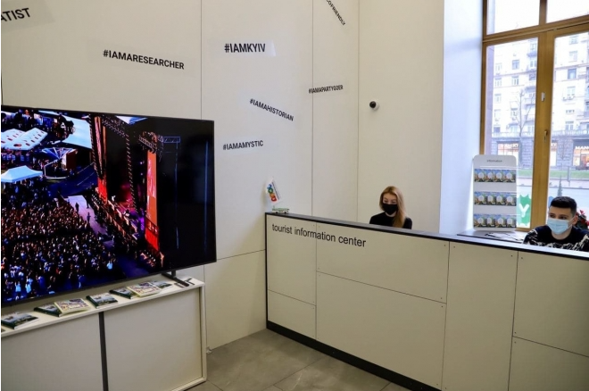

Хто ми?
Ми команда ентузіастів, яка зацікавлена у високоякісному туристичному обслуговуванні та відкрита для нових вражень і відкриттів.Ось фото нашого тур центру у Києві
Туристичні місця в Україні
Україна - країна, багата на різноманітні туристичні атракції. Ось декілька найбільш популярних туристичних місць у різних регіонах
України:
Київ: Столиця України, Київ, пропонує безліч туристичних визначних пам'яток. Найвідоміші з них:
Майдан Незалежності: Центральний площа Києва, який є символом революцій та історичних подій.
Софійський собор: Величний православний храм, заснований у XI столітті.
Печерська лавра: Святе місце православ'я, занесене до списку Всесвітньої спадщини ЮНЕСКО.
Андріївський узвіз: Популярний туристичний район з багатьма майстернями, галереями та крамницями.